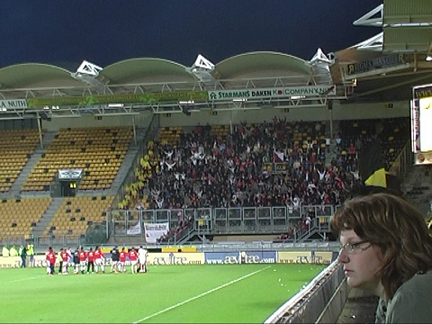

|
Roda JC - FC Utrecht (1-1) 12 mei 2007
|
Een blije Izzie komt nog eens op bezoek in Z16.
Er heerst een licht euforische stemming in een mooi vol stadion.
Een doelpunt is immers genoeg.
Oper komt voorbij de uitglijdende verdediger Dickoh en schiet hoog keihard
raak
in de korte hoek: 1-0, (14').
Bij deze stand gaat Roda door naar de volgende ronde van de play offs voor een
UEFA-ticket.
Uitstekende scoringskans voor Agustien. Zijn schot gaat echter hoog over.
Een vrije trap van Somers komt in het zestienmetergebied. Cornelisse weet die
bal
middels een hakje in de goal te werken: 1-1, (38').Deze stand brengt Utrecht een
ronde verder omdat een uitgescoord doelpunt dubbel telt.
In de tweede helft is Roda oppermachtig maar het weet niet te scoren zoals in
deze
situatie waarin het lijkt of niemand durft aan te leggen.
Roda voetbalt en FC Utrecht trekt een muur op. Ook gaan er voortdurend
voetballers
liggen terwijl doelman Vorm behalve meesterlijk keepen, veel tijd rekt.
Paniek bij Utrecht als Roda een vrije trap krijgt toegewezen.
Roda jaagt verbeten op de goal terwijl Utrecht volhardt in het dichtmetselen van
het
eigen doelgebied en het opvoeren van het ene na het andere theaterstukje.
Vrije trap De Fauw die via een speler van Utrecht naast gaat.
Iedereen denkt dat de kopbal van Kah in het doel verdwijnt. Helaas net niet.
Een meningsverschil tussen Broerse en Agustien leidt tot een....
.... een massale opstoot tussen veldspelers, bankzitters en staf.
Deze levert uiteindelijk een gele kaart op voor zowel Agustien als Broerse.
Op het eind van de 5 minuten extra tijd kopt Ramzi de bal gevaarlijk in maar de
doelman van Utrecht houdt zijn ploeg overeind.
Terwijl de Utrechtsupporters hun vreugdevuren ontsteken....
....is er op de grasmat overvloedig voer voor emo-teevee.
Roda knokte tevergeefs tegen de Utrechtse muur. Een pijnlijke uitschakeling.
Kujovic, Agustien en Hesp namen afscheid van de club.

Deze teleurgestelde supporter heeft geen oog voor het feestje op de achtergrond.
Na lang wachten druppelden er eindelijk enkele spelers de Kickoff binnen zoals
De Fauw.
Kah.
Vandamme. Ook Lachambre was er bij.
© Koempels Pleasure Dome
|